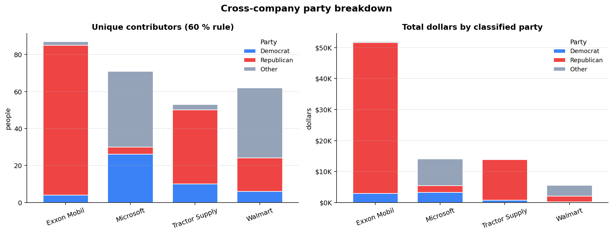
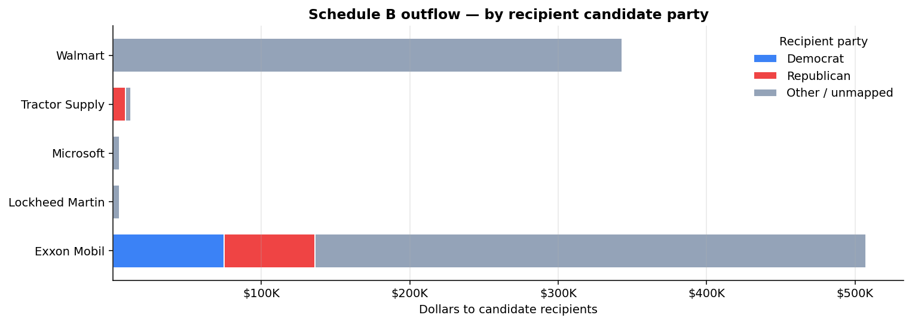
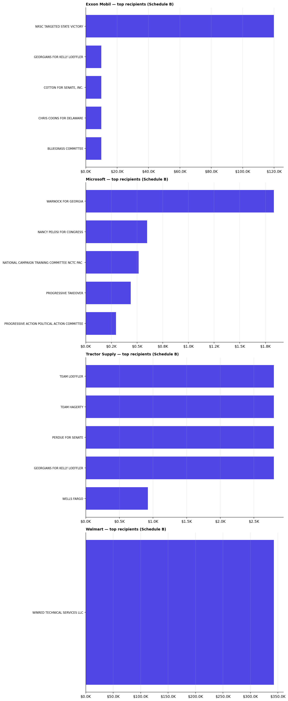
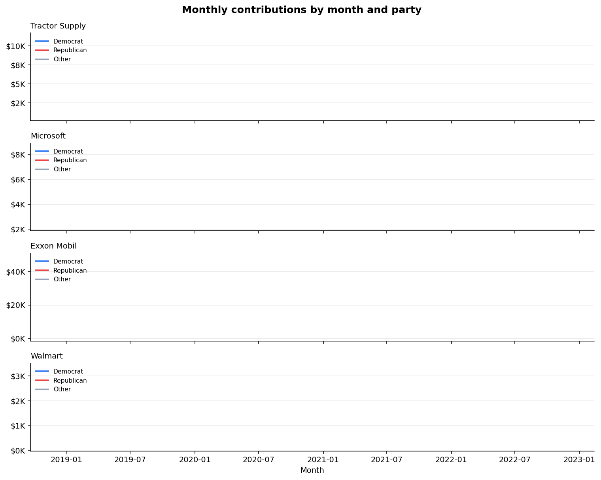
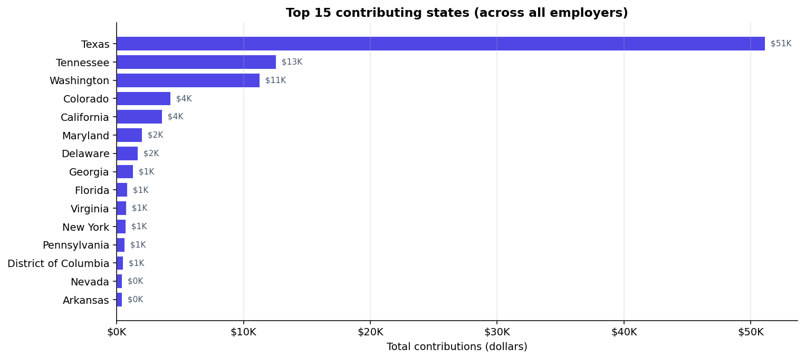
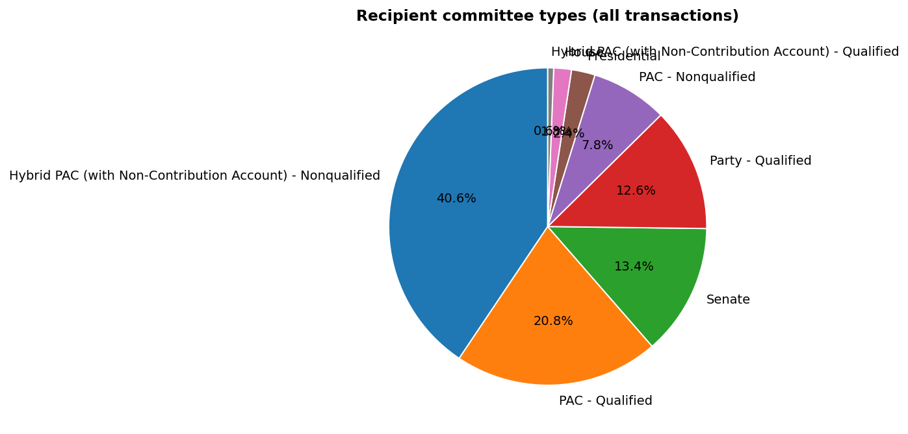

Cross-Company FEC Analysis · 2019-01-01 → 2020-12-31
Pulls Schedule A receipts and Schedule B disbursements from the OpenFEC API, joins committee-to-party lookups, classifies contributors with the 60 % rule, and lines up inflow vs. outflow side by side.
Tractor Supply · Microsoft · Exxon Mobil · Walmart · Lockheed Martin
Cross-company
2 notebooks: a basic 60 %-rule analysis and a multi-company port of the SAS pipeline (Schedule A inflow + Schedule B outflow + 60 % classification).
Design
How the SAS pipeline maps to DuckDB + pandas, end to end.
Data
Schedule A receipts and SAS-parity output tables.
Source
Python client, builder script, and Justfile recipes.
Companies
5
Fortune-500 employers analyzed
Inflow $
$96,733
334 unique contributors (60 % rule)
Outflow $
$871,427
639 Schedule B disbursements
States
41
represented across all transactions
Beyond the original SAS pipeline
Design doc →The SAS pipeline ran sascsvc19.sas against pre-downloaded CSVs and lookup tables. This port keeps the full SAS logic — committee→party join, gender inference, 60 % rule, two-track contributor/contribution outputs — and adds four things SAS never had.
Schedule B outflow
Where each corporate PAC ultimately spent the money. $871,427 across 639 disbursements.
API-direct party
Committee party comes from the embedded API field, with /committee/{id}/ filling nulls — no static AllPacs.csv needed.
Candidate enrichment
/candidate/{id}/ resolves recipient party + office. Outflow can be sliced by who actually got the money.
Side-by-side companies
SAS produced one PROC TABULATE page per employer. Here all 5 employers appear together in stacked bars, time series, and state maps.
Lean by employer
contributors classified by 60 % rule62 contributors · $5,505
61 contributors · $11,146
71 contributors · $14,050
87 contributors · $51,944
53 contributors · $14,088
Findings





